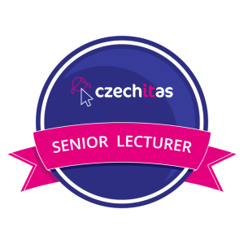

Michal Kučera
Ahoj! Jsem Michal, je mi 22, rád se učím, a ještě raději učím ostatní. Na střední jsem začal pořádně objevovat svět IT a od té doby mě zájem o něj neopustil. Moji lásku k IT ještě více prohloubil studentský program od Microsoftu – STC (Studentské Trenérské Centrum), který jsem absolvoval krátce před maturitou. Moje spolupráce s Microsoftem ale neskončila. Po startu na vysoké jsem se dostal do navazujícího programu Microsoft Student Partners (MSP), kde jsem se za 3 roky vypracoval do role Country Leada. S programem STC také stále spolupracuji, vedl jsem několik studentských týmů zaměřených na cloudovou platformu Azure a v současné době zastávám roli Learning & Development Lead.
Krátce před absolvováním střední školy jsem objevil vzdělávací organizaci Czechitas, kde jsem si za cca 3 roky prošel všemi dobrovolnickými pozicemi i pracovním úvazkem. Měl jsem na starosti brněnskou část největšího projektu Czechitas – Digitální akademie, zakládal a rozšiřoval jsem doplňující program pro absolventky Digitální akademie – DA Alumni a podílel jsem se na vývoji informačního systému Czechitas. Nyní už se v Czechitas věnuji pouze lektorování.
Jako IT freelancer spolupracuji i se spoustou dalších firem a pracuji na různých projektech. Jejich podrobnější popis najdete na mém LinkedIn profilu. Po dobu, co působím v oblasti IT, jsem si našel zálibu i v přednášení, project managementu, time managementu, osobní produktivitě a v oblastech s tím spojenými. Pomalu, ale jistě, se dostávám i ke koučinku. Rád dělám to, co mě baví, naplňuje a dávám do toho 100 %.
Lektorování
Poslední tři roky se aktivně věnuji lektorování workshopů, přednášek, kurzů a dětských kroužků. Baví mě také výstupy na různých konferencích a v panelových diskuzích, které se týkají technologií. Mám zkušenost s učením dětí, dospělých, i seniorů. Vždy se snažím o maximální srozumitelnost a flexibilitu. Věřím, že každý je výjimečný, proto se v průběhu přednášky nebojím cokoliv upravit a zajistit tak co nejvíce individuální přístup. Rovněž jsem zastáncem toho, že by se lidé během přednášky měli bavit, trocha vtipu, gifů a memes v mých prezentacích tedy rozhodně nechybí. :)
Přednášek
Učastníků
V roce 2019 jsem se stal certifikovaným seniorním lektorem Czechitas.
“Já žasnu! V jeho věku umět srozumitelně a atraktivně předávat informace a udržet si takovou dobu pozornost účastníků je fakt unikátní. Bezvadné. Jak jsem napsala dříve, kdyby byli učitelé tací, jako je Michal, věřím, že je české školství na úplně jiné úrovni.“
– účastnice workshopu Úvod do světa IT – přehled technologií (Czechitas)“Mezi účastníky kurzů je velmi oblíben pro svoji odbornou znalost lektorovaných témat, klidnou povahu, trpělivost a ochotu při vysvětlování. Je zodpovědný, bez problémů zvládá náročné situace“
– Bc. Michal Kučera, manažer vzdělávacích kurzů (SŠIPF Brno – kurzy Windows 10 a Office)“Michal vyniká nejen svými technickými znalostmi produktů, ale také skvělým přístupem ke studentům (v tomto konkrétním případě studentům středních škol) a promyšlenou vzdělávací strategií, kdy mu nezáleží pouze na tom, aby odříkal poznatky stran probírané látky, ale na tom, aby studenti opravdu téma pochopili, zvládli, a našli praktické využití nových znalostí. Též byl vždy připraven dát účastníkům kurzů konkrétní a kvalitní zpětnou vazbu na zadané úkoly.“
– Vladimír Hruban, Product Marketing Manager (Microsoft – kurzy Office)Projekty
Mimo lektorování se zabývám i vývojem. V současné době se specializuji na webový frontend – HTML, CSS (Bootstrap), JS (Vue.js). Dříve jsem pracoval v jazycích C, C++, PHP, Python nebo C#. Mimo to dokážu pracovat s cloudovou platformou Azure a cizí mi není ani datová analýza a vizualizace v Power BI.
Codemas 2019
Zůstaň doma a naprogramuj si hru
Ostatní rozpracované projekty naleznete na mém GitHubu.
Kontakt
Nejrychlejší možnou cestou, jak mě kontaktovat, jsou sociální sítě – Instagram, LinkedIn nebo Twitter. Zároveň budu rád, když mě na těchto sítích budete sledovat. Pokud preferujete e-mail, neváhejte mě kontaktovat na business@michalkucera.com.